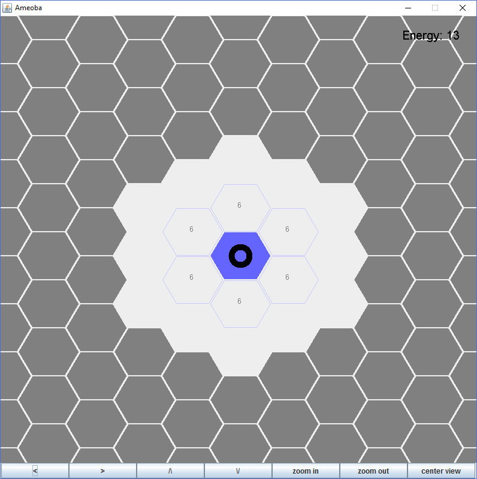
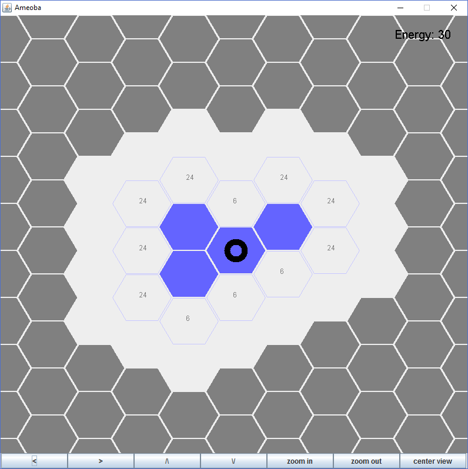
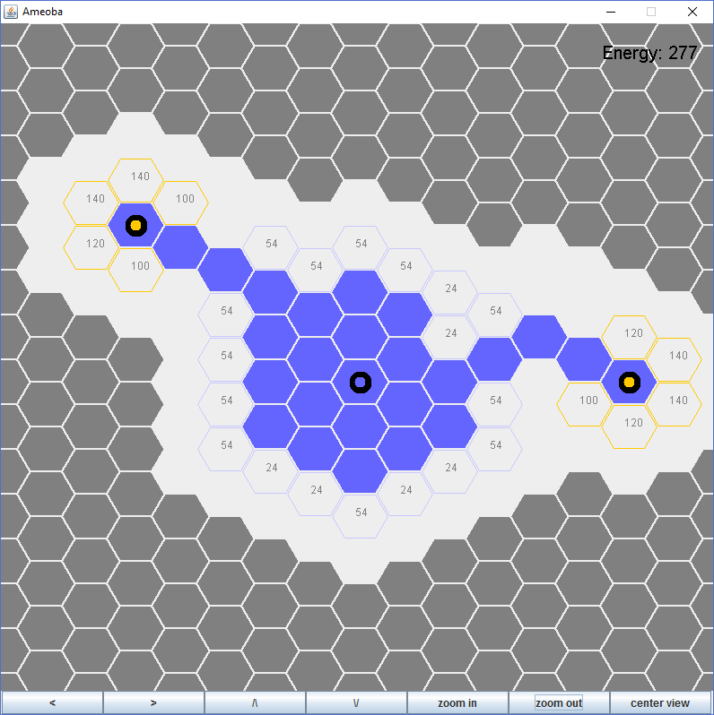
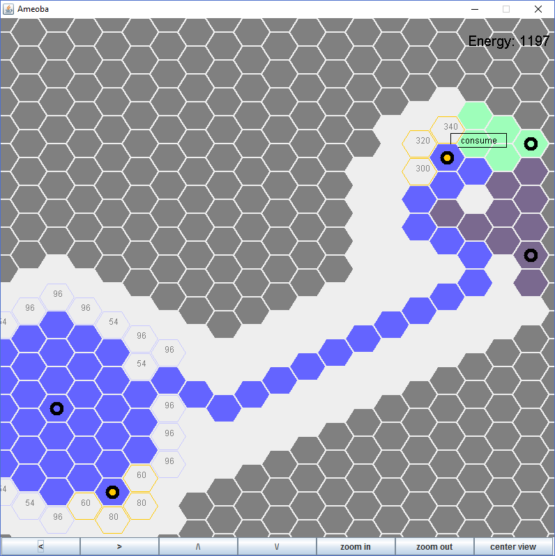
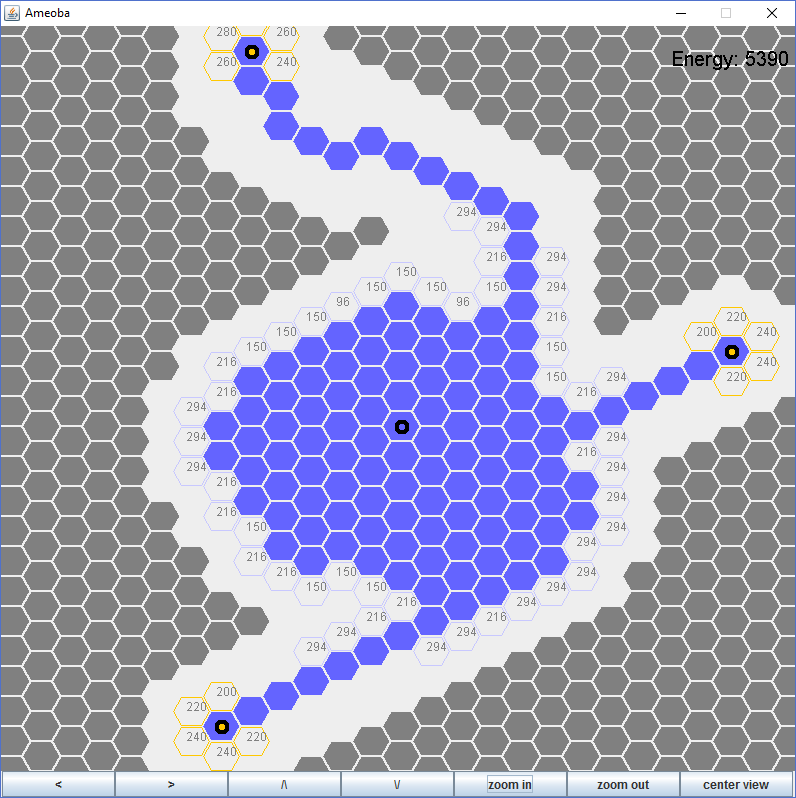

Amoeba (v1.0)
Amoeba is a game that I programmed using Java. In the game, you
control an 'amoeba' by specifying the direction that it
grows in to consume other organisms and make yourself larger
and more powerful. The source for this program is in a
public github repository at the following link.
github.com/alexschoep/Amoeba
The .jar file to run this game can also be downloaded
here.
The game world consists of a hexagonal matrix with different
colors and symbols representing different types of 'cells'.
The buttons at the bottom of the screen are used to adjust
the view and your 'energy' displayed in the top right.
You begin the game with one cell and 0 energy. You gain
energy over time based on the number of cells you have. I
thought of this like the amoeba is conducting photosynthesis.
The more surface area it has, the more energy it can absorb.

You can click on highlighted cells to expand your amoeba
at the cost of energy. The cost of expanding to that cell
is displayed in the middle of the cell. Notice that only
some cells are highlighted. The 'body' of the amoeba cannot
expand too far in one direction.

When your amoeba is large enough, it will grow a 'head'. They
are differentiated from normal cells by the yellow circle in
the center. Heads can expand infinitely far in any direction
but at much higher energy cost. Heads should be mainly be used
for exploration.

Other organisms can be consumed to absorb their energy. Finding
other organisms can be challenging however, as only cells
close to the amoeba are visible. Cells too far away to be
visible are colored gray.

Expansion becomes increasingly difficult as the game
progresses. The cost to expand to cells further from the
origin of your amoeba grows exponentially, while energy
gain from photosynthesis only grows linearly. This must
be offset by consuming other organisms.

To implement the hexagonal matrix, I used a coordinate system
similar to the one described
here
. I kept track of which cells were adjacent to one another
using a HashMap. It mapped a cell on to an ArrayList of cells
which were adjacent to it. This was generated once at the
beginning of the game and stored in memory to increase speed.
The graphical system was implemented using Java Swing. Each Cell
object stores a Polygon object which I made a hexagon. The hexagon
is scaled based on how far the game board is zoomed in, then translated
to the correct position in the frame.
As of now the game is simple but I plan to add more content soon.